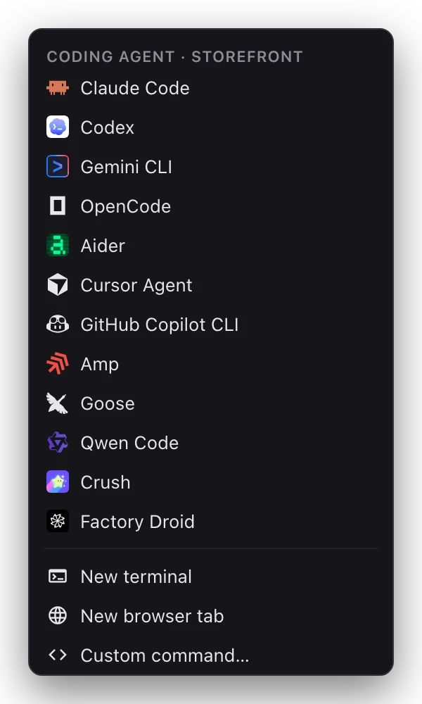

Agents · Claude Code first
Start Claude Code. See when it needs you.
Pick Claude Code from the + in the tab bar and give it a task. Every space shows whether it is working, waiting for you or done, with its subagents underneath. Codex, Gemini CLI and nine others start the same way; their status is still being verified.
- Subagents nest underneathClaude Code's helpers appear in a tree as they start.
- Needs input, loud enoughA bell in the status bar and a banner when an agent asks.
- Done stays litA finished agent's card keeps glowing until you come back.
- Signed in as youAira runs the Claude Code you already installed. Nothing to configure.

